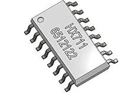
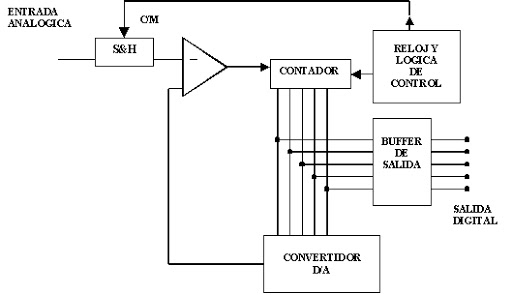
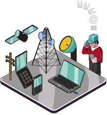
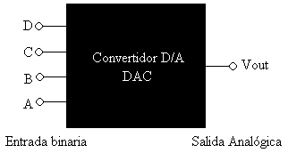

Los convertidores A/D son dispositivos electrónicos que establecen una relación biunívoca entre el valor de
la señal en su entrada y la palabra digital obtenida en su salida. La relación se establece en la mayoría de
los casos, con la ayuda de una tensión de referencia.
La conversión analógica a digital tiene su fundamento teórico en el teorema de muestreo y en los conceptos
de cuantificación y codificación.
Una primera clasificación de los convertidores A/D, es la siguiente:
• Conversores de transformación directa.
• Conversores con transformación (D/A) intermedia, auxiliar.

Practica A/D
Los conversores analógico-digital tienen una gran cantidad de aplicaciones. Están presentesen todo tipo de sistemas como pueden ser sistemas de telecomunicaciones, sistemas decontrol, medidas, etc. También tiene aplicaciones en sistemas donde es necesario medirseñales analógicas, como pueden ser sensores de temperatura, proximidad o en sistemasdonde hay que realizar el procesamiento y/o almacenamiento de audio o cualquier otro tipode información. Como estas señales no pueden ser analizadas directamente por unprocesador, es necesaria la utilización de conversores A/D.

Las dos operaciones E/S relativas al proceso de mayor importancia son la conversión de digital a analógico D/A y la conversión de analógico a digital A/D. Básicamente, la conversión D/A es el proceso de tomar un valor representado en código digital (código binario directo o BCD) y convertirlo en un voltaje o corriente que sea proporcional al valor digital. Este voltaje o corriente es una cantidad analógica, ya que puede tomar diferentes valores de cierto intervalo.

Practica D/A
Las entradas digitales D, C, B y A se derivan generalmente del registro de salida de un sistema digital. Los 24 = 16 diferentes números binarios representados por estos 4 bits se enlistan en la tabla siguiente. Por cada número de entrada, el voltaje de salida del convertidor D/A es un valor distinto. De hecho, el voltaje de salida analógico Vout es igual en voltios al número binario (no es así en todos los casos). También podría tener dos veces el número binario o algún otro factor de proporcionalidad. La misma idea sería aplicable si la salida del D/A fuese la corriente Iout.
Los DAC se utilizan siempre que la salida de un circuito digital tiene que ofrecer un voltajeo corriente
analógicos para impulsar o activar un dispositivo analógico. Algunas de lasaplicaciones más comunes se
describen a continuación:
-Control: La salida digital de una computadora puede convertirse en una señal de
controlanalógico para ajustar la velocidad de un motor o para controlar casi cualquier variablefísica.
-Análisis automático: Los ordenadores personales pueden ser programados para generar lasseñales analógicas
(através de un DAC) que se necesitan para analizar circuitos analógicos.La respuesta de salida analógica del
circuito de prueba normalmente se convertirá en valordigital por un ADC.
- Control de amplitud digital: Un DAC multiplicativo se puede utilizar para ajustardigitalmente la amplitud
de una señal analógica. Recordemos que éste genera una salidaque es el producto de un voltaje de referencia
y la
entrada binaria. Si dicho voltaje es unaseñal que varía con el tiempo, la salida del DAC seguirá esta señal,
pero con una
amplituddeterminada por el código de entrada binario. Una utilización normal de esta aplicación esel
“control de volumen” digital, donde la salida de un circuito o computadora digital puedeajustar la amplitud
de una señal de audio.
- Convertidores A/D: Varios tipos de convertidores A/D utilizan unos DAC que son parte
desus circuitos.